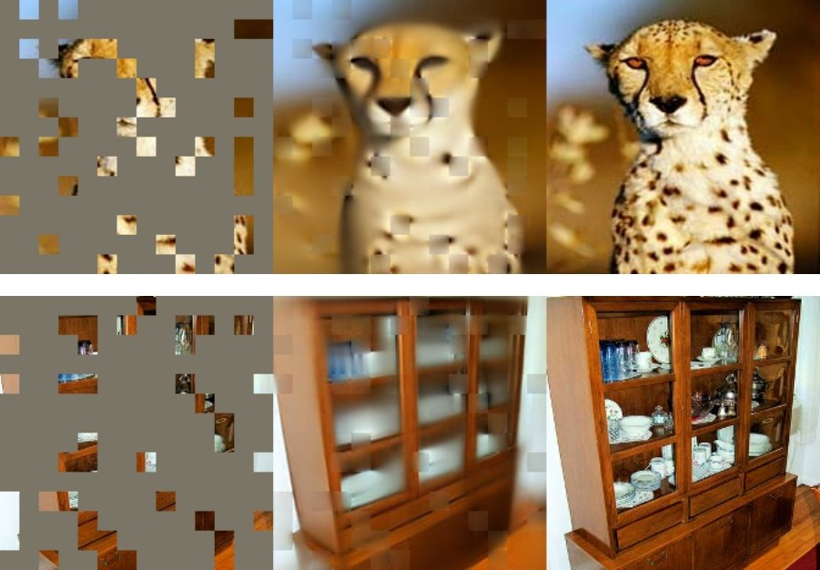

On this page
Masked image modeling hides most of an image’s patches (small square tiles of pixels) and trains an encoder (the network turning an image into a vector) to help rebuild it. Every step draws a fresh random mask, and the loss is the pixel error on the hidden parts. You keep the encoder and drop the small decoder. The method here is MAE (He et al. 2022).
The text model BERT hides 15% of the words, mostly behind a mask token (one learned vector meaning "missing"), and predicts them. MAE does the same with patches; as an autoencoder (encode the input, decode it back) the image is its own label. Unlike Contrastive Learning and Non-Contrastive Self-Supervised Learning, MAE never compares two views of an image, so there is no collapse (every image mapped to the same output) to prevent.
A Vision Transformer (ViT) cuts an image into 16 by 16 pixel patches, turns each into a vector, a token, plus a positional embedding saying where it sat (as in Positional Encoding and Masking), and mixes the tokens with attention.
Images are full of repeats: a missing patch “can be recovered from neighboring patches with little high-level understanding” (the MAE paper), so MAE hides most patches at random; at a 75% mask ratio, 49 of 196 stay visible.

MAE picked the ratio by pretraining a large ViT for 800 epochs on ImageNet-1K at each ratio, then scoring a linear probe (one linear layer on frozen features) and fine-tuning of every weight.
A hidden patch next to visible ones can be filled by copying a neighbor; one far from any visible patch must be inferred from the rest of the scene. Grid masking (keep 1 patch in 4) leaves more hidden patches beside visible ones, and its probe drops (the square in Figure 5).
Grid always hides 75%.
Figure 6. Orange marks hidden patches beside 2 or more visible ones; at 75%, Grid has over twice as many as Random.
The encoder, a big ViT, reads only the visible patches and never sees a mask token. A much smaller decoder then adds a mask token in every hidden spot, outputs pixels for every patch, and is dropped afterwards.
Real images never contain mask tokens, so the encoder should never see them. BEiT (Bao et al. 2022), the first BERT-style masked image model for ViTs, did feed them to its encoder; it also hid about 40% of patches in blocks and predicted discrete visual tokens (codes from a learned image tokenizer) instead of pixels.
The masking gives each patch a random number, keeps the 49 smallest, and encodes only those.
import torch
import torch.nn as nn
MASK_RATIO = 0.75
N, NUM_PATCHES, D = 8, 196, 768
x = torch.randn(N, NUM_PATCHES, D)
encoder = nn.Linear(D, D) # stand-in ViT
n_keep = int(NUM_PATCHES * (1 - MASK_RATIO)) # 49
noise = torch.rand(N, NUM_PATCHES) # fresh every step
keep_ids = noise.argsort(dim=1)[:, :n_keep]
idx = keep_ids.unsqueeze(-1).expand(-1, -1, D)
visible = torch.gather(x, 1, idx) # [N, 49, D]
latent = encoder(visible)Only hidden patches are graded, as in BERT. The target is each patch's normalized pixels (minus its mean, over its standard deviation).
The loss on toy pixels hides exactly 147 patches with the same argsort as Section 4; hidden is 1 on H, and the last line averages ei over H only.
import torch
MASK_RATIO, EPS = 0.75, 1e-6
N, NUM_PATCHES, P = 8, 196, 768
x = torch.rand(N, NUM_PATCHES, P)
x_hat = torch.rand(N, NUM_PATCHES, P) # decoder guess
n_hide = int(NUM_PATCHES * MASK_RATIO) # 147
hide_ids = torch.rand(N, NUM_PATCHES).argsort(dim=1)[:, :n_hide]
hidden = torch.zeros(N, NUM_PATCHES).scatter(1, hide_ids, 1.0)
mean = x.mean(-1, keepdim=True)
std = (x.var(-1, keepdim=True) + EPS).sqrt()
x_norm = (x - mean) / std # per patch
e = ((x_hat - x_norm) ** 2).mean(dim=-1) # e_i, [N, 196]
L = (e * hidden).sum() / hidden.sum()For MAE, probe and fine-tuning results are “largely uncorrelated”. The encoder is a stack of 24 Transformer blocks (attention plus a small MLP), and tuning only the last one closes most of the gap. MAE features are not linearly separable until a few layers adapt, so a linear probe undersells them.
One step joins both snippets; the mask token fills the hidden slots only after the encoder, and the position embedding pos stays fixed, as MAE’s fixed table of sine and cosine values does.
import torch
import torch.nn as nn
N, NUM_PATCHES, P, D = 8, 196, 768, 256
MASK_RATIO, EPS = 0.75, 1e-6
embed, to_pixels = nn.Linear(P, D), nn.Linear(D, P)
pos = torch.randn(1, NUM_PATCHES, D) # fixed; MAE uses sin-cos
mask_token = nn.Parameter(torch.zeros(1, 1, D))
enc_layer = nn.TransformerEncoderLayer(D, nhead=8, batch_first=True)
encoder = nn.TransformerEncoder(enc_layer, num_layers=4)
dec_layer = nn.TransformerEncoderLayer(D, nhead=8, batch_first=True)
decoder = nn.TransformerEncoder(dec_layer, num_layers=1)
model = nn.ModuleList([embed, to_pixels, encoder, decoder])
params = [*model.parameters(), mask_token]
decay = [p for p in params if p.ndim >= 2 and p is not mask_token]
no_decay = [p for p in params if p.ndim < 2 or p is mask_token]
groups = [dict(params=decay, weight_decay=0.05), dict(params=no_decay, weight_decay=0.0)]
opt = torch.optim.AdamW(groups, lr=2.4e-3, betas=(0.9, 0.95))
patches = torch.rand(N, NUM_PATCHES, P) # one batch
n_keep = int(NUM_PATCHES * (1 - MASK_RATIO))
keep = torch.rand(N, NUM_PATCHES).argsort(dim=1)[:, :n_keep]
idx = keep.unsqueeze(-1).expand(-1, -1, D)
latent = encoder(torch.gather(embed(patches) + pos, 1, idx))
full = mask_token.expand(N, NUM_PATCHES, D)
full = torch.scatter(full, 1, idx, latent)
x_hat = to_pixels(decoder(full + pos)) # [N, 196, P]
hidden = torch.ones(N, NUM_PATCHES).scatter(1, keep, 0.0)
mean = patches.mean(-1, keepdim=True)
std = (patches.var(-1, keepdim=True) + EPS).sqrt()
e = ((x_hat - (patches - mean) / std) ** 2).mean(dim=-1)
L = (e * hidden).sum() / hidden.sum()
opt.zero_grad()
L.backward()
opt.step()| Acts | every step; a fresh mask per image |
|---|---|
| Keeps | only the weights and the mask token; the mask is redrawn every step |
| Plugs in | pretraining; then drop the decoder and fine-tune (50 epochs, ViT-L) or probe (90) |
| Settings | batch 4096, AdamW, base lr 1.5×10−4 (times batch/256), weight decay 0.05, 40 warm-up epochs, 800 or 1600 epochs |
| Cost | ViT-L, 1600 epochs in 31 hours on 128 TPU v3 cores; skipping the hidden 75% trains 2.8 times faster (sec. 4; speedup, Table 2) |
| Code | facebookresearch/mae |
| Gotchas | mask tokens stay out of the encoder; the official script needs --norm_pix_loss (off by default); no weight decay on biases, norms or position embeddings |
| Knob, default | Raise it | Lower it |
|---|---|---|
| Mask ratio, the share of patches in H; 75% | fewer hidden patches next to visible ones; past 75% the probe falls (Fig. 5); at 100% nothing is left to see | more hidden patches that copying a neighbor can fill, and a weaker probe; at 0 nothing is left to predict |
| Decoder depth, Transformer blocks in the decoder; 8 | the probe stops gaining (73.3% at 12 against 73.5% at 8); fine-tuning stays near 84.9% (Table 1a) | the probe falls to 65.5% at 1 block, the fewest that still pass visible tokens to mask tokens, while fine-tuning holds at 84.8% (Section 6) |
From the MAE paper, sec. 3 and 4, Tables 8 to 10; main_pretrain.py in the official code.
Self-Supervised Learning Failure Modes and Checks comes next, on shortcuts through overlapping views and on detecting collapse.